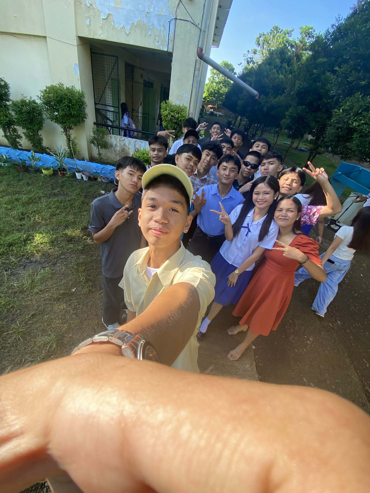
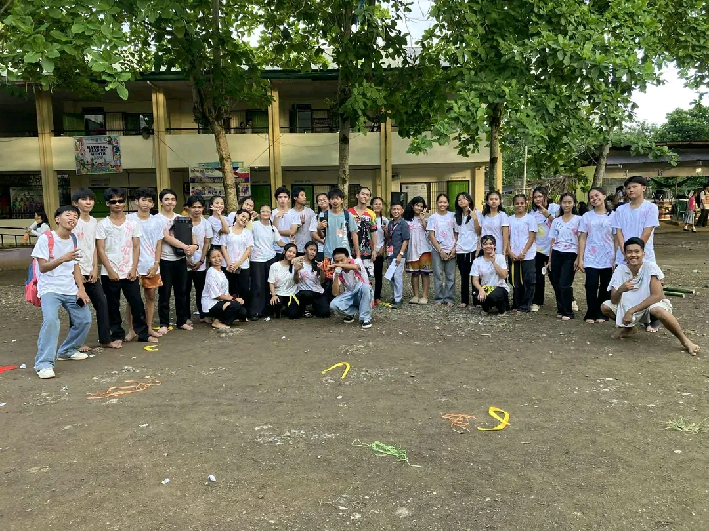

Generating random paragraphs can be an excellent way for writers to get their creative flow going at the beginning of the day. The writer has no idea what topic the random paragraph will be about when it appears. This forces the writer to use creativity to complete one of three common writing challenges. The writer can use the paragraph as the first one of a short story and build upon it. A second option is to use the random paragraph somewhere in a short story they create. The third option is to have the random paragraph be the ending paragraph in a short story. No matter which of these challenges is undertaken, the writer is forced to use creativity to incorporate the paragraph into their writing.

